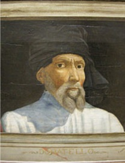
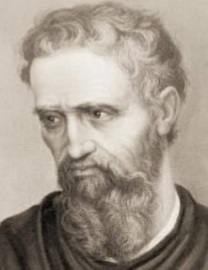
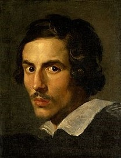

Sculpture
Sculpture, from the Latin word sculpere, meaning "to carve", is the art of making two or three-dimensional representative or abstract forms, especially by carving stone or wood or by casting metal or plaster.
History of Sculpture
- Sculpture began fundamentally from hieroglyphics, a writing system that uses symbols or pictures to denote objects, concepts, or sounds.
- The earliest sculpture is the cave art.
- Ancient sculptures was made to supply magical help to hunters.
- Statues were used to represent gods.
- Ancient kings had likenesses carved; thus, portrait sculpture was born.
- Ancient people used to build large monuments for commemoration.
- Ancient Sumerians celebrated military victory with sculpture.
- The participants of World War II also used sculpture to honor their soldiers.
Modern Sculpture
It is defined as sculpture beginning with the work of Auguste Rodin (1840 – 1917) and ending with the advent of Pop Art and Minimalism in the 1960s.
Digital sculpture - it is where a digital artist "sculpts" objects with the aid of a computer-aided design software. The process of sculpting an object digitally is called "modelling".
Famous Foreign Sculptors

Donatello

Michelangelo
